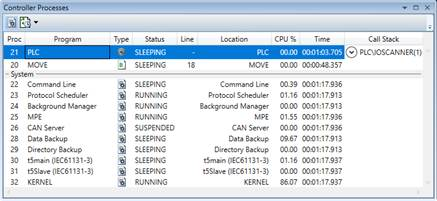
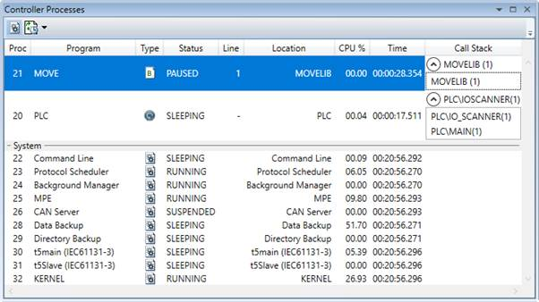

The Process Viewer shows information about all currently running processes on the controller. The information in the grid is as follows:
|
Column |
Description |
|
Proc. |
Process number |
|
Program |
Program name |
|
Type |
Program type (See " Program Types ") |
|
Status |
Run status (usually RUNNING or PAUSED) |
|
Line |
Current execution line in the program (if PAUSED) |
|
CPU % |
Percentage of CPU time being used |
|
Time |
Time since the process was started |
|
Call Stack |
Call stack information |
|
Button |
Function |
|
|
Show / Hide system processes |
|
|
Adjust automatic updating speed (High or Normal). |
Call stack information is available for Trio BASIC processes and IEC 61131-3 task processes.

With Trio BASIC libraries it is possible to define user functions that can be called from Trio BASIC programs. When a Trio BASIC process is paused, the call stack information column displays call stack info for the corresponding process.
For Trio BASIC processes only the top of the call stack is available:
In IEC 61131-3 programming environment it is possible to define sub-programs and user-defined function blocks that can be called from main programs. When an IEC 61131-3 task is paused, the call stack information column displays the full call stack information for the corresponding task. The call stack always starts with the currently scanned main program.
The call stack information includes program name and line number / column index.
Note : double-click on an entry in the call-stack to open the corresponding program editor and navigate to the paused line.